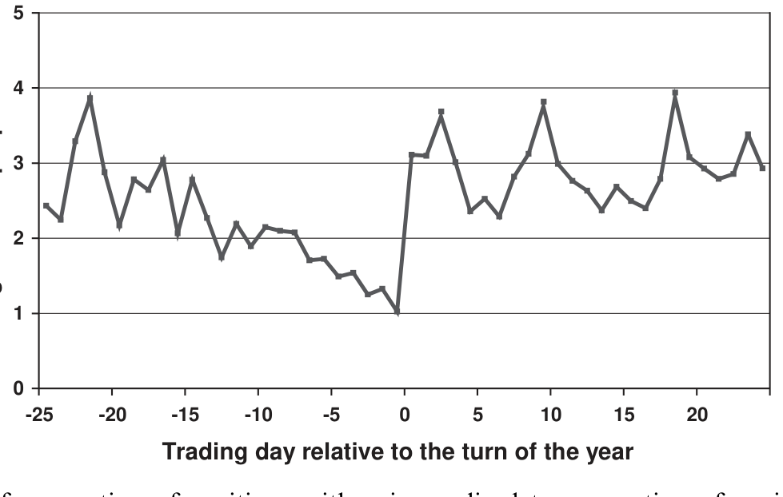
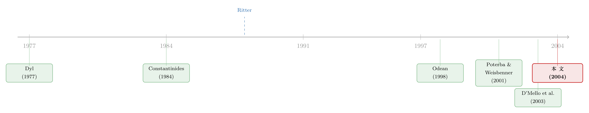

年底甩亏损，转身又买回：芬兰账本里那条「洗售」的暗线
本文读的是 Grinblatt & Keloharju (2004, Journal of Financial Economics)：用芬兰一份覆盖全国、几乎覆盖全部股票的持仓与交易登记数据，作者直接「抓现行」——投资者在年末加倍卖出亏损股，转身又把刚卖掉的同一只股票买回来；这种「洗售」(wash sale) 在年前制造净卖压、年后制造净买压，并且确实推动了跨年前后的股票收益，尤其是小公司——但推动它的是这股「税收性买卖压力」本身，而不是公司规模。
1 一桩悬了十六年的「我敢肯定」
先讲一个学术圈里的小掌故。
1988 年，Jay Ritter 在 Journal of Finance 上写下了一句日后被反复引用的话：「我敢肯定，数据会显示，那些在 12 月卖掉某只股票的散户，重新买回这只股票的概率高得不成比例。」（Ritter, 1988, p. 715）这句话之所以重要，是因为它点破了「年末抛售亏损股是为了避税」这个假说里最硬的那块骨头：如果你卖股票真的只是为了报一笔资本损失、抵掉别处的资本利得，那么你对这家公司本身的看法压根没变——理性的做法，就是把它立刻买回来。卖出与买回之间，唯一的差别就是税表上多出来的那行亏损。
可问题在于，没人见过这样的数据。
为什么没人见过？因为在美国，这条路被堵死了。美国税法有所谓的「洗售规则」(wash sale rule)：你卖出一只股票确认亏损，如果在 30 天内又买回「实质相同」的证券，这笔亏损就不许抵税。于是在美国，纯粹的、立刻的「卖了再买回」根本无利可图，自然也就观察不到。Ritter 的断言因此一直悬在半空——听上去无比合理，却十六年无人能证。
这正是这篇论文的全部张力所在：一个人人觉得「显然成立」的行为假说，恰恰因为制度的存在而永远无法被直接观测。要验证它，你需要一个没有洗售限制、同时又能看清每一个投资者、每一笔交易、每一份成本基础的世界。
2 为什么是芬兰？
接着，一个自然的问题是：到哪里去找这样一个世界？
答案是芬兰。原因有两条，缺一不可。
第一，芬兰没有洗售限制。 芬兰税法里只有一条很泛的反避税原则（和美国类似），允许税务机关在「某项行为除避税外别无经济动机」时行使裁量权。原则上某些洗售可以被这条规则课税；但作者直言——「实践中这从未发生」。换句话说，在芬兰，今天上午把一只股票卖出确认亏损、下午再原样买回，是完全合法、且确实有税收好处的操作。Ritter 设想的那种交易，在这里可以光明正大地做。
第二，芬兰有一份近乎「上帝视角」的数据。 这就是芬兰中央证券存管机构 (Finnish Central Securities Depository) 的持股登记册。它是作者所知全世界第一份覆盖整个市场的股票持仓面板数据：截至 1995 年初，覆盖了芬兰股票总市值的 97%，约 2000 亿芬兰马克 (FIM)。它不是某家券商的样本，也不是问卷，而是官方的所有权凭证电子记录——既无代表性偏差，又极其可靠（详见作者此前的 Grinblatt & Keloharju, 2000, 2001）。
有了这两条，芬兰就成了检验 Ritter 假说的理想实验室。作者锁定的样本是 1994 年 12 月 27 日到 2000 年 5 月 26 日，用来分析五个跨年窗口（1996 至 2000 年的每个元旦前后）。这期间芬兰对家庭实行单一税率的资本利得税：1994–95 年 25%，1996 年起升到 28%，2000 年起 29%——与持有期长短、个人所得税档无关，干净得像教科书。
一个常被忽略的细节：芬兰人并没有把税完全避光。Kukkonen (2000) 用赫尔辛基富人样本算过，1995 年所有资本利得的有效平均税率只有 10%，远低于当时 25% 的法定税率。这说明投资者确实在用实现亏损来压低税单，但压不到零——这与美国的证据（Poterba, 1987）一脉相承。
3 第一幕：年末的「亏损大甩卖」
数据到手，第一步先看一个最朴素的事实：投资者在年末，到底是更愿意卖盈利的股票，还是更愿意卖亏损的股票？
衡量这件事的尺子，作者沿用了 Odean (1998) 的经典构造。对家庭投资者在「发生了卖出的那些交易日」上，计算这样一个比值：
$$ \text{ratio} = \frac{\dfrac{\#\ \text{realized gains}}{\#\ \text{realized gains} + \#\ \text{paper gains}}}{\dfrac{\#\ \text{realized losses}}{\#\ \text{realized losses} + \#\ \text{paper losses}}} $$
分子是「已实现盈利占所有盈利头寸的比例」(proportion of gains realized)，分母是「已实现亏损占所有亏损头寸的比例」(proportion of losses realized)。这里的「账面 (paper) 盈亏」指的是：在某次卖出发生的当天，投资者组合里没被卖掉、但成本价低于（或高于）当天收盘价的那些头寸。
举个作者给的例子帮你坐实直觉：假设 1995 年 12 月 20 日，所有当天有卖出动作的家庭合计持有 1,000 个股票头寸，其中卖掉了 400 个（300 个盈利、100 个亏损），剩下 600 个未卖的里有 400 个账面盈利、200 个账面亏损。那么分子是 300/700，分母是 100/300，比值 = 1.286。
这个比值的含义很直白：它大于 1，就说明投资者「死攥亏损、急卖盈利」——也就是著名的处置效应 (disposition effect)。整个样本期里，家庭的这个比值平均高达 2.28，处置效应铁证如山。（关于人们为何死扛亏损，可参见《死扛亏损的人，为什么没亏钱？》。）
但真正关键的一步，是把这个比值按交易日画出来，对齐到元旦前后的 50 个交易日。结果就是下面这张图。

Figure 1: The ratio of proportion of positions with gains realized to proportion of positions with losses
如图 1 所示，这条比值曲线在 12 月里一路下滑，到月末最后十个交易日近乎单调下跌；然后在 1 月的第一个交易日，画风一转，猛地跳升。具体到数字：跨年后 25 个交易日里最小的平均比值是 2.29（出现在第 +6 天），可它仍然比跨年前 14 个交易日里任何一天都高；而 12 月最后七个交易日，包揽了整个 50 天窗口里最低的七个比值。
作者还对事件窗口 [−8,−1]（年前最后那一小段）做了正式检验：相对于窗口 [−25,−9]，五年合计的 z 值是 −19.86；相对于年后窗口 [0,24]，z 值是 −28.38。两个数都把「年末这八天显著不同」钉死了。这个分析背后的体量是：37,716 笔已实现亏损、297,359 笔未实现亏损、184,993 笔已实现盈利、481,968 笔未实现盈利。
到这里，「年末加倍卖亏损股」已经是结实的事实。但——这还不足以证明是税在起作用。
4 第二幕：那些被卖掉的股票，转身又被买了回来
然后，一个所有人都会追问的问题冒出来了：年末多卖亏损股，未必是为了避税啊。
至少有三种「无辜」的解释在排队：
- 处置效应本身？不对，处置效应是「攥着亏损不卖」，方向恰恰相反，没法解释年末为何反而急着卖亏损股。
- 动量效应 (momentum, Jegadeesh & Titman, 1993)？一年里跌跌不休的股票，往往就是大家账面亏损最重的那些，而它们在 12 月可能继续跌，所以「理性地」在 12 月卖掉它们也说得通。Grinblatt & Moskowitz (2003) 确实发现 12 月里输家股票的动量效应是平时的五倍多。但作者指出：在芬兰，12 月的动量效应本身就很弱，这条解释立不住。
- 橱窗粉饰 (window dressing)？机构在年终要向投资者汇报持仓，把难看的输家清掉，免得「被人看见手里捏着一只跌惨的股」。
这三种解释，单看年末的卖出行为，都没法被排除。但真正关键的一步在于：去看这些被卖掉的股票，后来怎么样了。
如果是为了避税，理性的洗售者会立刻把同一只股票买回来——因为他对公司的判断没变，只想要那张税表上的亏损。而如果是橱窗粉饰、或是因为看空而割肉，他绝不会转身又买回来。
于是反转出现了：作者发现，投资者确实在大量地、几乎是当天地，把刚卖出的亏损股原样买回。而且这种回购率不是均匀的，它系统地取决于三个变量——亏损的幅度（亏得越多越要洗）、公司规模、以及卖出发生在年内多晚（越接近年末越要洗）。把回购活动按占成交量的比例来看，小盘股的回购有着远比大盘股更鲜明的「跨年季节性」。
这一刀下去，三种「无辜」解释一起出局。橱窗粉饰尤其经不起这一击：
如果年末的行为变化真是橱窗粉饰，那么最该粉饰的群体——金融与保险机构——理应表现出最大的「12 月集中抛售输家」。可数据恰恰相反：作者在金融/保险机构身上几乎找不到 12 月的行为变化。变化最剧烈的是家庭。而最爱粉饰橱窗的机构反而无动于衷。于是橱窗粉饰假说被否决——能解释家庭这种戏剧性转变的，只剩下避税。（非金融企业有一个温和的「12 月多卖输家」的倾向，但幅度远小于家庭，作者论证它同样源于避税而非粉饰，因为芬兰企业的报表利润与应税利润几乎一致，靠卖资产实现亏损反而会让自己账面更难看。）
值得一提的是，这个「谁在年末换仓」的问题，在美国市场也有人从机构与散户分野的角度追问过——可参见《一月效应背后，是谁在悄悄换仓？》，两篇放在一起读别有意味。
5 第三幕：从「行为」到「价格」——净买卖压力
到此为止，论文证明了避税性的洗售确实在发生。但 Ritter 当年点出这件事，最终是想解释一个更大的谜：小公司股票在 1 月的异常高收益，也就是所谓「一月效应」(January effect)。行为要能解释价格，还差最后一环。
这一环，作者用一个叫净税收性买卖压力 (net tax-loss buying pressure) 的量来搭。它的构造是：把某一天「因过去的卖出而发生的回购」减去「当天那些日后终将被回购的卖出」，再做一个标准化。直觉上，它衡量的是洗售交易在这一天净的方向：
- 在 12 月，洗售者在卖（先卖出、确认亏损），净压力为负——卖压；
- 跨过元旦，洗售者在买（把股票买回来），净压力为正——买压。
这股压力有着清晰的跨年季节性。接下来作者做横截面回归，把个股在跨年前后的日收益，回归到它自己的净买卖压力上。为了对付内生性，用的是两阶段最小二乘 (two-stage least squares, 2SLS)。结论是：
跨年前后的收益横截面，显著地与净回购活动相关——而且对小公司更强；但与公司规模本身无关。换句话说，过去人们以为是「小公司溢价」在驱动一月效应，可一旦控制住税收性买卖压力，规模本身 (firm size per se) 的解释力消失了。真正在推价格的，是这股买卖压力，规模只是它的「替身」。
而且这个结果很稳健：无论用收盘价对收盘价、还是买价对买价 (bid-to-bid) 的收益，结论都成立；它也不是 Keim (1989) 那类市场微观结构偏差（买卖价差在日历转折点上的跳动）造出来的假象。
把三幕连起来，这篇论文讲了一个完整的因果链条：年末避税动机 → 集中卖出亏损股 → 立刻原样买回（洗售）→ 净买卖压力的跨年季节性 → 跨年前后（尤其小盘股）的收益。Ritter 那句「我敢肯定」，十六年后终于有了数据。
6 文献脉络
退一步看，这条研究线是怎样一步步走到芬兰这份账本上的？
最早的一批证据，全都来自成交量与收益的季节性。Dyl (1977) 发现 12 月里输家股票的成交量更大；随后 Givoly & Ovadia (1983)、Reinganum (1983)、Keim (1983)、Roll (1983)、Lakonishok & Smidt (1986) 一众论文都猜测，美国股票在跨年前后的日收益模式源于税收性抛售。但正如作者点破的：收益模式本身并不是有力证据。澳大利亚、日本的税务年度和美国不同，跨年收益模式却和美国相似（Brown et al., 1983；Kato & Schallheim, 1985），这就让「收益季节性=避税」的推断显得脆弱。Chan (1986) 也曾正面追问过税收性抛售能否解释一月季节性。
理论一侧，Constantinides (1984) 给出了带个人税的最优交易框架，为「年末实现亏损」提供了规范依据。
转折点是 Ritter (1988)：他第一次明确把「洗售」摆上台面，断言年末卖出者会异常高频地买回同一只股票——这成了本文要验证的核心命题。

行为证据这边，Odean (1998) 用美国某折扣券商的数据，发现投资者实现盈利远多于实现亏损（处置效应，源头是 Shefrin & Statman, 1985），但这种差距在 12 月被「冲淡」。再往后，Sias & Starks (1997) 从机构 vs 散户的持股差异入手，Poterba & Weisbenner (2001) 和 Grinblatt & Moskowitz (2003) 从不同税制下一月反转的强弱入手，都给出了更有力的间接证据；D'Mello, Ferris & Hwang (2003) 用成交数据比较元旦前后十天与 7 月，显示跌得最惨的股票在年末承受更大卖压、跨年即消失。但这些研究都缺一样东西：投资者实际的盈亏与成本基础。
本文 (Grinblatt & Keloharju, 2004) 站的正是这个位置——它手里攥着每个投资者每笔交易的成本基础，又身处一个没有洗售限制的国度，于是第一次把「避税 → 洗售 → 买卖压力 → 价格」这条链子，从头到尾直接地连了起来。
7 评论与延伸（Q&A + 研究方向）
（a）几个可能的疑问
Q：处置效应说人们「死攥亏损」，本文说人们「年末抢卖亏损」，这不矛盾吗？
不矛盾，二者方向相反、各管一段时间。整年平均来看，家庭的盈亏实现比高达 2.28，处置效应占主导（攥亏损、卖盈利）。但在 12 月最后那几天，避税动机短暂地压过了处置效应，让比值骤降。本文恰恰是把这两股力量在日历上分离了开来。
Q：怎么就敢断定是「税」，而不是「看空了才割肉」？
核心证据是几乎当天的回购。如果是看空割肉，没人会转身把同一只股票原样买回。回购率还系统性地随亏损幅度上升、随接近年末上升——这是避税的指纹，不是基本面判断的指纹。
Q：橱窗粉饰这个对手假说，凭什么被排除得这么干脆？
靠「错位的群体反应」。最该粉饰橱窗的金融/保险机构在 12 月几乎没有行为变化，变化最剧烈的反而是最不需要向外汇报的家庭。粉饰假说预测的群体排序，和数据里看到的恰好相反。
Q：「规模本身不重要」这个结论是不是太强了？
它是在控制了净税收性买卖压力之后得到的——规模的系数变得不显著，而买卖压力显著。更准确的说法是：在跨年这个特定窗口里，过去归因于「小公司溢价」的那部分收益，被税收性买卖压力吸收掉了。这不否认其他时段、其他机制下规模的作用。
Q：芬兰这么小的市场，结论能外推到美国吗？
要小心。芬兰的价值正在于它的「制度极端」——没有洗售限制，所以能看到美国看不到的纯洗售。但也正因如此，美国有洗售规则，洗售必须拉开 30 天以上，价格效应的时间结构会不同。本文证明的是「机制存在且能推动价格」，而非「美国的一月效应有多少比例来自洗售」。
Q：为什么用 2SLS，而不是直接 OLS 把收益回归到买卖压力上？
因为买卖压力和当日收益之间存在反向因果与同期性：价格本身会影响谁去卖、卖多少（账面盈亏是价格的函数）。直接 OLS 会有内生性偏误，作者用工具变量做两阶段最小二乘来切断这一回路。
（b）几个可能的研究问题与提案
1. 把这套「洗售 → 净买卖压力 → 价格」的链条搬到公司债市场。 【经济故事】公司债的税收处理（票息、资本利得、市场折价债的特殊规则）比股票复杂得多，且持有人以机构为主，避税与会计动机交织。年末是否同样存在「卖出确认亏损、再回补久期/信用敞口」的洗售式交易，进而在跨年前后压出信用利差的季节性？ 【可行性】中。需要 TRACE 级别的成交数据加上持有人层面的成本基础（后者最难拿，可用保险公司 NAIC 持仓近似）。识别上可借本文的群体对照思路，比较应税账户与免税账户持有人的年末行为差异。
2. 用外资 vs 本土持有人的「税收身份」差异做自然实验。 【经济故事】跨境投资者面对的是母国税制，本土投资者面对的是芬兰（或美国）税制。如果年末抛售真由避税驱动，那么对芬兰资本利得税「无感」的外资，年末就不该出现这种季节性行为。外资持仓比例高的股票，其跨年买卖压力季节性应当更弱。 【可行性】高。芬兰这份数据本身就区分了投资者类别（本文已用家庭/非金融企业/金融机构的对照），扩展到「本土 vs 外资」是自然的下一步，识别干净。
3. 洗售交易对流动性与买卖价差的冲击。 【经济故事】年末集中的「卖了再买」会在小盘股上制造可预测的双向订单流。做市商若能预判这股季节性压力，价差与深度会如何调整？这股压力本身是否构成一种可被套利的流动性事件？ 【可行性】中。需要日内订单簿数据。Helsinki Exchanges 的限价订单簿历史可得性是瓶颈，但识别策略清晰——把买卖价差回归到事先构造的净税收性买卖压力上。
4. 洗售规则的「政策实验」价值。 【经济故事】各国洗售规则差异很大（美国 30 天、有些国家无限制）。一个开征或取消洗售限制的改革，会是检验「制度如何塑造避税交易」的干净断点。 【可行性】低到中。取决于能否找到一次清晰的法律变更及其前后的微观交易数据，可遇不可求。
8 参考文献与我的判断
贡献。 这篇论文最漂亮的地方，是它把一个「人人觉得显然、却无人能证」的命题，靠一个制度上的巧合（芬兰无洗售限制）加一份史无前例的全市场持仓数据，做成了一次近乎实验室级别的直接验证。它不是又一篇「收益季节性暗示避税」的间接推断，而是真正抓到了「同一个投资者，卖掉，再买回」的现行。把避税动机、洗售行为、净买卖压力、以及价格四者串成一条因果链，并干净地把「规模本身」从一月效应里剔了出去——这是教科书级的实证设计。
对识别的担忧。 我会保留两点。其一，2SLS 的工具变量是否真正外生，正文截断处未及细看，而买卖压力与收益的同期纠缠是这类研究的命门，结论的强度系于工具的质量。其二，成本基础只能对样本期内「公开市场买入或增发」取得的股票算得准——通过赠与、期权行权等方式获得的存量被剔除，这可能在「谁进入样本」上引入选择，尤其对早期、对高管持股而言。作者对此做了诚实的剔除处理，但样本选择的方向性值得再推敲。
后续想看到什么。 我最想看到的是把这条链子接到信用市场和外资持有人上（见上文研究提案 1、2）：公司债的税收与会计动机更复杂、持有人更集中，若能在那里也观测到「年末洗售 → 利差季节性」，这篇论文的机制就不再是芬兰股市的孤例。退一步，哪怕只是用「本土 vs 外资」的税收身份差异，在同一份芬兰数据里再做一次安慰剂检验，也会让「避税」这个解释更无可辩驳。
参考文献
- Brown, P., Keim, D., Kleidon, A., Marsh, T. (1983). Stock return seasonalities and the tax-loss selling hypothesis: analysis of the arguments and Australian evidence. Journal of Financial Economics 12, 105–127.
- Chan, K. C. (1986). Can tax-loss selling explain the January seasonal in stock returns? Journal of Finance 41, 1115–1128.
- Constantinides, G. (1984). Optimal stock trading with personal taxes. Journal of Financial Economics 13, 65–89.
- D'Mello, R., Ferris, S., Hwang, C. (2003). The tax-loss selling hypothesis, market liquidity, and price pressure around the turn-of-the-year. Journal of Financial Markets 6, 73–98.
- Dyl, E. (1977). Capital gains taxation and year-end stock market behavior. Journal of Finance 32, 165–175.
- Grinblatt, M., Keloharju, M. (2000). The investment behavior and performance of various investor-types: a study of Finland's unique data set. Journal of Financial Economics 55, 43–67.
- Grinblatt, M., Keloharju, M. (2001). What makes investors trade? Journal of Finance 56, 589–616.
- Grinblatt, M., Keloharju, M. (2004). Tax-loss trading and wash sales. Journal of Financial Economics 71, 51–76.
- Jegadeesh, N., Titman, S. (1993). Returns to buying winners and selling losers: implications for stock market efficiency. Journal of Finance 48, 65–92.
- Keim, D. (1989). Trading patterns, bid-ask spread, and estimated stock returns: the case of common stocks at calendar turning points. Journal of Financial Economics 25, 75–97.
- Kukkonen, M. (2000). Capital gains taxation and realization behaviour: evidence from Finnish panel data. Ph.D. dissertation, Helsinki School of Economics.
- Odean, T. (1998). Are investors reluctant to realize their losses? Journal of Finance 53, 1775–1798.
- Poterba, J. (1987). How burdensome are capital gains taxes? Evidence from the United States. Journal of Public Economics 33, 157–172.
- Poterba, J., Weisbenner, S. (2001). Capital gains rules, tax-loss trading, and turn-of-the-year returns. Journal of Finance 56, 353–368.
- Ritter, J. (1988). The buying and selling behavior of individual investors at the turn of the year. Journal of Finance 43, 701–717.
- Shefrin, H., Statman, M. (1985). The disposition to sell winners too early and ride losers too long: theory and evidence. Journal of Finance 40, 777–790.
- Sias, R., Starks, L. (1997). Institutions and individuals at the turn-of-the-year. Journal of Finance 52, 1543–1562.